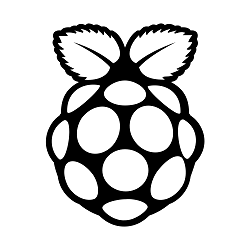

<div id="list" class="content">
  <h3>リスト</h3>
  <br>

  <div class="table-responsive">
    <table class="table table-striped">
      <thead>
        <tr>
          <th scope="col">名称</th>
          <th scope="col">タグ</th>
          <th scope="col">ID</th>
        </tr>
      </thead>
      <tbody>
        <tr v-for="row in rows">
          <td class="align-middle">{{ row.name }}</td>
          <td class="align-middle">{{ row.tag }}</td>
          <td class="align-middle">{{ row.id }}</td>
          <td class="align-middle"><button class="btn btn-outline-danger" v-on:click="removeRecord(row.id)">削除</button></td>
        </tr>
      </tbody>
    </table>
  </div>
  <br>
  
  <div class="text-right">
    <a href="#modal_index" class="modal_index btn btn-outline-primary">
      <span class="oi oi-plus"></span>
      追加
    </a>
  </div>
</div>

<!-- モーダル表示用 -->
<div id="modal_index" style="display:none">
  <div class="container text-center">
    <h3 class="mt-2 mb-2">新しいアクションを追加</h3>
    
    
    <br>
    
    <p>{{ progress }}</p>
    <br>
    受け入れ開始を押したのち、ラズベリーパイの赤外線モジュールにリモコンを向けて、赤外線信号を送信してください
    <br>
    <button class="btn btn-outline-primary mt-3 mr-3" v-bind:disabled="isDisabled" v-on:click="startCapture">
      <span class="oi oi-wifi"></span>
      受け入れ開始
    </button>
    <button class="btn btn-outline-secondary mt-3" v-on:click="cancelCapture">
      <span class="oi oi-x"></span>
      キャンセル
    </button>
  </div>
</div>

<a href="#modal_entry" class="modal_entry" style="display:none">hoge</a>
<div id="modal_entry" style="display:none">
  <div class="container text-center">
    <h3 class="mt-2 mb-2">アクションの名称を登録</h3>
    <br>
    新たに追加するアクションの名称を登録して下さい
    <br>
    <form>
      <div class="form-group mt-3">
        <label>名称</label>
        <input type="text" class="form-control" v-model="entry_name">
      </div>
      <div class="form-group">
        <label>タグ</label>
        <input type="text" class="form-control" v-model="entry_tag">
      </div>
    </form>
    <br>
    <button class="btn btn-outline-primary mt-3 mr-3" v-on:click="entryAction">
      <span class="oi oi-share-boxed"></span>
      登録
    </button>
    <button class="btn btn-outline-secondary mt-3" v-on:click="cancelCapture">
      <span class="oi oi-x"></span>
      キャンセル
    </button>
  </div>
</div>